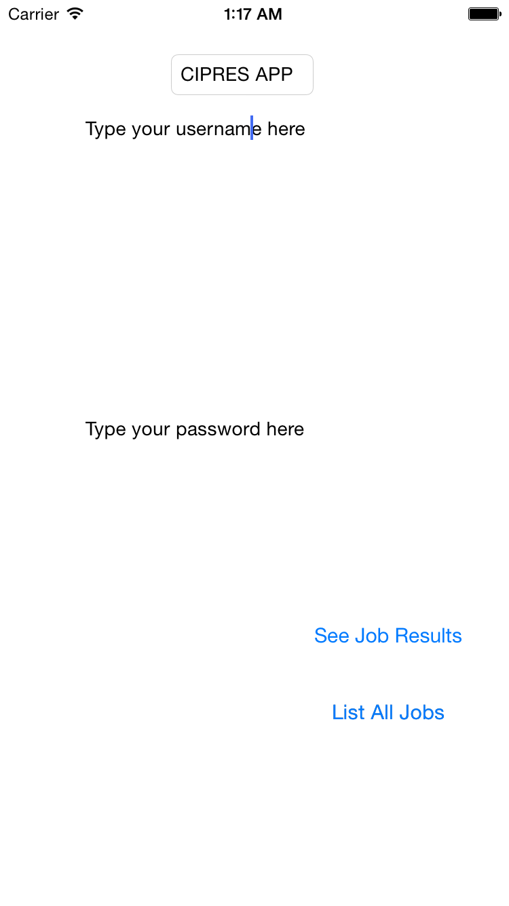
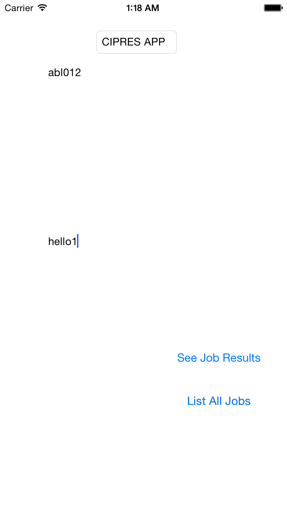
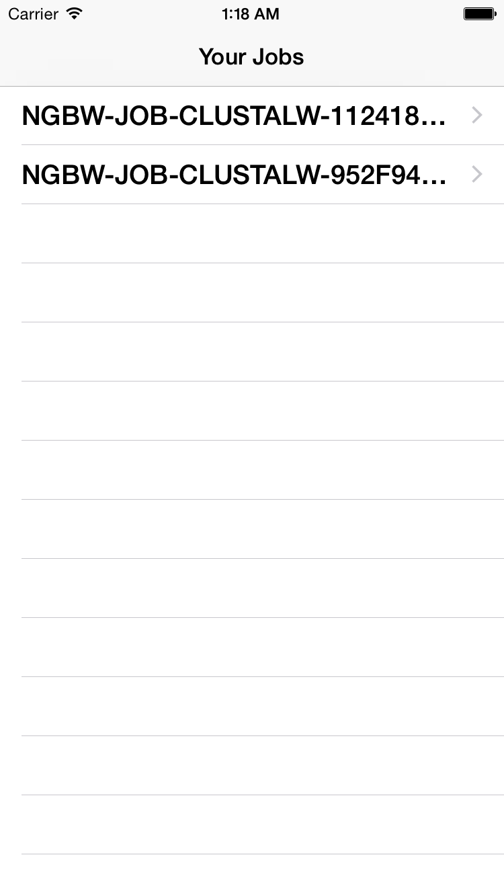
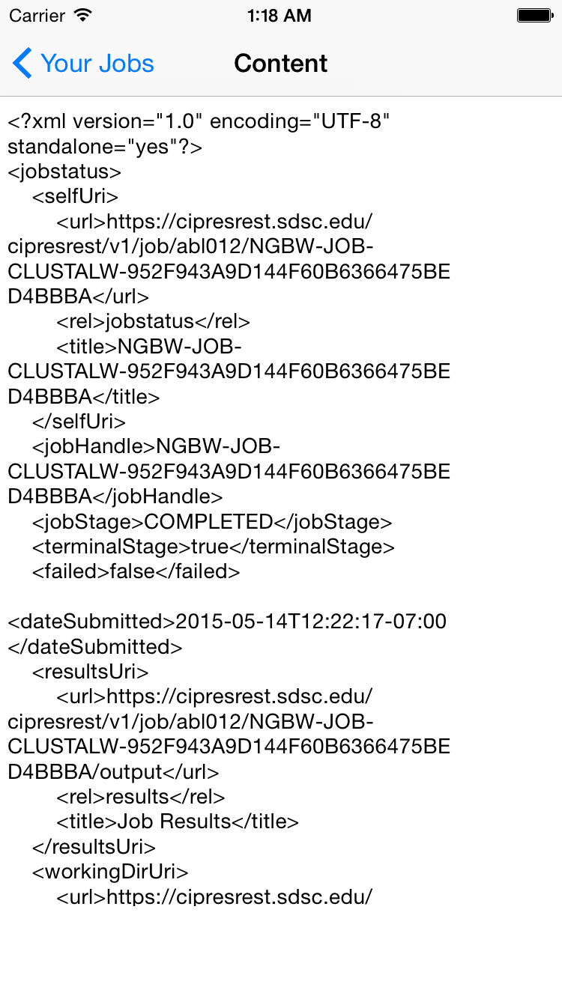

Description of CIPRES APP Project
The provided project is an iOS application called
CIPRES APP. The app's central task is to provide a user
of the CIPRES APP RESTful API another way to access a list of their jobs
on the go and check the status or results of a job they have submitted.
On startup, the app will look something like this:

The user will notice that there are two prompts. They will need to
first delete the contents of each field and provide a valid username and
password for the next step to show up correctly. Like so:

If the authentication
step fails, then no jobs will be shown.
Unfortunately, there is no way to go back after the first step
except by closing the entire app and restarting it. In which case, the user will
be prompted for their username and password again.
On the second step where the user has successfully provided a valid
username, password combination to the CIPRES server. The application
will take the user to a page like this:

Here you will see your jobs as a list and you can select any of these to see
the status and results of that job. Here is one example:

From here you can choose to go back to the list of jobs or close the app.
How to download:
This app is currently unavailable. But will be on the iOS app store.
Please come back for updates!